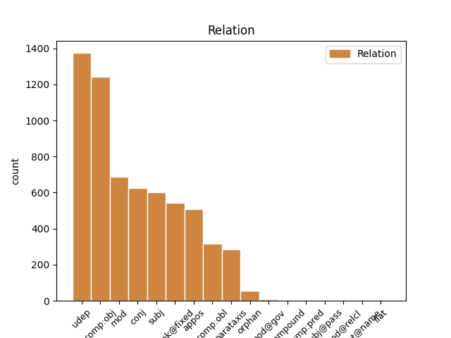
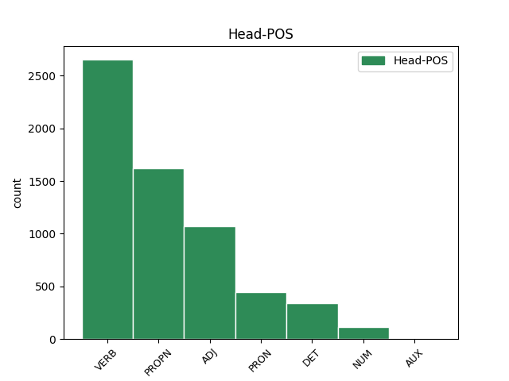
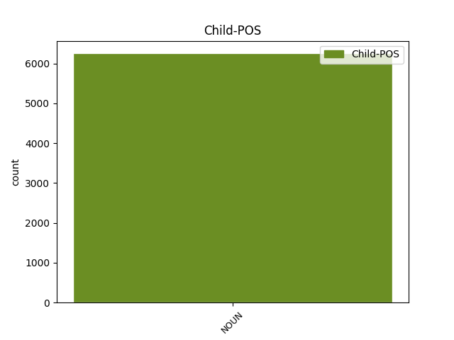

Distribution of features within this leaf



Agreement Rules sorted by frequency.
When the head token is PROPN and the dependent token is NOUN.
1 Сперва _ _ _ _ 0 _ _ _
2 я _ _ _ _ 0 _ _ _
3 увидел _ _ _ _ 0 _ _ _
4 дымок _ _ _ _ 0 _ _ _
5 , _ _ _ _ 0 _ _ _
6 ровной _ _ _ _ 0 _ _ _
7 голубой _ _ _ _ 0 _ _ _
8 струйкой _ _ _ _ 0 _ _ _
9 сочившийся _ _ _ _ 0 _ _ _
10 из _ _ _ _ 0 _ _ _
11 орешника _ _ _ _ 0 _ _ _
12 , _ _ _ _ 0 _ _ _
13 и _ _ _ _ 0 _ _ _
14 у _ _ _ _ 0 _ _ _
15 меня _ _ _ _ 0 _ _ _
16 мелькнула _ _ _ _ 0 _ _ _
17 мысль _ _ _ _ 0 _ _ _
18 о _ _ _ _ 0 _ _ _
19 лесном _ _ _ _ 0 _ _ _
20 пожаре _ _ _ _ 0 _ _ _
21 , _ _ _ _ 0 _ _ _
22 но _ _ _ _ 0 _ _ _
23 потом _ _ _ _ 0 _ _ _
24 я _ _ _ _ 0 _ _ _
25 различил _ _ _ _ 0 _ _ _
26 съедобный _ _ _ _ 0 _ _ _
27 запах _ _ _ _ 0 _ _ _
28 этого _ _ _ _ 0 _ _ _
29 дымка _ _ _ _ 0 _ _ _
30 и _ _ _ _ 0 _ _ _
31 вспомнил _ _ _ _ 0 _ _ _
32 Учу Уча PROPN _ Animacy=Anim|Case=Acc|Gender=Fem|Number=Sing 0 _ _ _
33 и _ _ _ _ 0 _ _ _
34 старого _ _ _ _ 0 _ _ _
35 пастуха пастух NOUN _ Animacy=Anim|Case=Acc|Gender=Masc|Number=Sing 32 conj _ SpaceAfter=No
36 , _ _ _ _ 0 _ _ _
37 варившего _ _ _ _ 0 _ _ _
38 кулеш _ _ _ _ 0 _ _ _
39 в _ _ _ _ 0 _ _ _
40 прокопченном _ _ _ _ 0 _ _ _
41 солдатском _ _ _ _ 0 _ _ _
42 котелке _ _ _ _ 0 _ _ _
43 . _ _ _ _ 0 _ _ _
When the head token is ADJ and the dependent token is NOUN.
1 Мы _ _ _ _ 0 _ _ _
2 живем _ _ _ _ 0 _ _ _
3 менее _ _ _ _ 0 _ _ _
4 чем _ _ _ _ 0 _ _ _
5 в _ _ _ _ 0 _ _ _
6 сорока _ _ _ _ 0 _ _ _
7 километрах _ _ _ _ 0 _ _ _
8 от _ _ _ _ 0 _ _ _
9 Москвы _ _ _ _ 0 _ _ _
10 , _ _ _ _ 0 _ _ _
11 но _ _ _ _ 0 _ _ _
12 поблизости _ _ _ _ 0 _ _ _
13 нет _ _ _ _ 0 _ _ _
14 железной _ _ _ _ 0 _ _ _
15 дороги _ _ _ _ 0 _ _ _
16 , _ _ _ _ 0 _ _ _
17 да _ _ _ _ 0 _ _ _
18 и _ _ _ _ 0 _ _ _
19 шоссе _ _ _ _ 0 _ _ _
20 от _ _ _ _ 0 _ _ _
21 наших _ _ _ _ 0 _ _ _
22 мест _ _ _ _ 0 _ _ _
23 далековато _ _ _ _ 0 _ _ _
24 , _ _ _ _ 0 _ _ _
25 потому _ _ _ _ 0 _ _ _
26 и _ _ _ _ 0 _ _ _
27 лес лес NOUN _ Animacy=Inan|Case=Nom|Gender=Masc|Number=Sing 30 subj _ _
28 у _ _ _ _ 0 _ _ _
29 нас _ _ _ _ 0 _ _ _
30 хороший хороший ADJ _ Case=Nom|Degree=Pos|Gender=Masc|Number=Sing 0 _ _ _
31 , _ _ _ _ 0 _ _ _
32 чистый _ _ _ _ 0 _ _ _
33 , _ _ _ _ 0 _ _ _
34 не _ _ _ _ 0 _ _ _
35 израненный _ _ _ _ 0 _ _ _
36 любителями _ _ _ _ 0 _ _ _
37 пиршеств _ _ _ _ 0 _ _ _
38 на _ _ _ _ 0 _ _ _
39 лоне _ _ _ _ 0 _ _ _
40 природы _ _ _ _ 0 _ _ _
41 . _ _ _ _ 0 _ _ _
When the head token is DET and the dependent token is NOUN.
1 Сколько _ _ _ _ 0 _ _ _
2 минуло _ _ _ _ 0 _ _ _
3 лет _ _ _ _ 0 _ _ _
4 , _ _ _ _ 0 _ _ _
5 а _ _ _ _ 0 _ _ _
6 мне _ _ _ _ 0 _ _ _
7 до _ _ _ _ 0 _ _ _
8 сих сей DET _ Case=Gen|Number=Plur 0 _ _ _
9 пор пора NOUN _ Animacy=Inan|Case=Gen|Gender=Fem|Number=Plur 8 unk@fixed _ _
10 снятся _ _ _ _ 0 _ _ _
11 его _ _ _ _ 0 _ _ _
12 пестрота _ _ _ _ 0 _ _ _
13 и _ _ _ _ 0 _ _ _
14 шум _ _ _ _ 0 _ _ _
15 , _ _ _ _ 0 _ _ _
16 его _ _ _ _ 0 _ _ _
17 снедь _ _ _ _ 0 _ _ _
18 и _ _ _ _ 0 _ _ _
19 сытые _ _ _ _ 0 _ _ _
20 запахи _ _ _ _ 0 _ _ _
21 , _ _ _ _ 0 _ _ _
22 теплая _ _ _ _ 0 _ _ _
23 , _ _ _ _ 0 _ _ _
24 вязкая _ _ _ _ 0 _ _ _
25 смолка _ _ _ _ 0 _ _ _
26 , _ _ _ _ 0 _ _ _
27 кедровая _ _ _ _ 0 _ _ _
28 халва _ _ _ _ 0 _ _ _
29 и _ _ _ _ 0 _ _ _
30 золотые _ _ _ _ 0 _ _ _
31 глаза _ _ _ _ 0 _ _ _
32 женщины _ _ _ _ 0 _ _ _
33 . _ _ _ _ 0 _ _ _
When the head token is PRON and the dependent token is NOUN.
1 Верно _ _ _ _ 0 _ _ _
2 , _ _ _ _ 0 _ _ _
3 по _ _ _ _ 0 _ _ _
4 той _ _ _ _ 0 _ _ _
5 же _ _ _ _ 0 _ _ _
6 причине _ _ _ _ 0 _ _ _
7 звучали _ _ _ _ 0 _ _ _
8 тут _ _ _ _ 0 _ _ _
9 так _ _ _ _ 0 _ _ _
10 ясно _ _ _ _ 0 _ _ _
11 , _ _ _ _ 0 _ _ _
12 открыто _ _ _ _ 0 _ _ _
13 непуганые _ _ _ _ 0 _ _ _
14 голоса _ _ _ _ 0 _ _ _
15 ушедших _ _ _ _ 0 _ _ _
16 ; _ _ _ _ 0 _ _ _
17 я _ _ _ _ 0 _ _ _
18 слышал _ _ _ _ 0 _ _ _
19 голос _ _ _ _ 0 _ _ _
20 деда _ _ _ _ 0 _ _ _
21 и _ _ _ _ 0 _ _ _
22 голос _ _ _ _ 0 _ _ _
23 своего _ _ _ _ 0 _ _ _
24 отца _ _ _ _ 0 _ _ _
25 , _ _ _ _ 0 _ _ _
26 и _ _ _ _ 0 _ _ _
27 слепые _ _ _ _ 0 _ _ _
28 дети _ _ _ _ 0 _ _ _
29 закричали _ _ _ _ 0 _ _ _
30 жалостно _ _ _ _ 0 _ _ _
31 : _ _ _ _ 0 _ _ _
32 " _ _ _ _ 0 _ _ _
33 Мальчик мальчик NOUN _ Animacy=Anim|Case=Nom|Gender=Masc|Number=Sing 36 parataxis _ SpaceAfter=No
34 , _ _ _ _ 0 _ _ _
35 куда _ _ _ _ 0 _ _ _
36 ты ты PRON _ Case=Nom|Number=Sing|Person=2 0 _ _ _
37 ? _ _ _ _ 0 _ _ _
38 " _ _ _ _ 0 _ _ _
When the head token is VERB and the dependent token is NOUN.
1 Он _ _ _ _ 0 _ _ _
2 осторожно _ _ _ _ 0 _ _ _
3 , _ _ _ _ 0 _ _ _
4 за _ _ _ _ 0 _ _ _
5 дужку _ _ _ _ 0 _ _ _
6 , _ _ _ _ 0 _ _ _
7 снял _ _ _ _ 0 _ _ _
8 очки _ _ _ _ 0 _ _ _
9 , _ _ _ _ 0 _ _ _
10 ему _ _ _ _ 0 _ _ _
11 хотелось _ _ _ _ 0 _ _ _
12 получше _ _ _ _ 0 _ _ _
13 рассмотреть _ _ _ _ 0 _ _ _
14 человека _ _ _ _ 0 _ _ _
15 , _ _ _ _ 0 _ _ _
16 задающего задавать VERB _ Animacy=Anim|Aspect=Imp|Case=Acc|Gender=Masc|Number=Sing|Tense=Pres|VerbForm=Part|Voice=Act 0 _ _ _
17 такие _ _ _ _ 0 _ _ _
18 несуразные _ _ _ _ 0 _ _ _
19 вопросы вопрос NOUN _ Animacy=Inan|Case=Acc|Gender=Masc|Number=Plur 16 comp:obj _ SpaceAfter=No
20 , _ _ _ _ 0 _ _ _
21 а _ _ _ _ 0 _ _ _
22 припылившиеся _ _ _ _ 0 _ _ _
23 стекла _ _ _ _ 0 _ _ _
24 только _ _ _ _ 0 _ _ _
25 мешали _ _ _ _ 0 _ _ _
26 . _ _ _ _ 0 _ _ _
When the head token is NUM and the dependent token is NOUN.
1 Дети _ _ _ _ 0 _ _ _
2 любят _ _ _ _ 0 _ _ _
3 играть _ _ _ _ 0 _ _ _
4 в _ _ _ _ 0 _ _ _
5 куплю _ _ _ _ 0 _ _ _
6 - _ _ _ _ 0 _ _ _
7 продажу _ _ _ _ 0 _ _ _
8 , _ _ _ _ 0 _ _ _
9 инстинкт инстинкт NOUN _ Animacy=Inan|Case=Nom|Gender=Masc|Number=Sing 16 subj _ _
10 торговли _ _ _ _ 0 _ _ _
11 , _ _ _ _ 0 _ _ _
12 мены _ _ _ _ 0 _ _ _
13 , _ _ _ _ 0 _ _ _
14 наверное _ _ _ _ 0 _ _ _
15 , _ _ _ _ 0 _ _ _
16 один один NUM _ Case=Nom|Gender=Masc 0 _ _ _
17 из _ _ _ _ 0 _ _ _
18 древнейших _ _ _ _ 0 _ _ _
19 человеческих _ _ _ _ 0 _ _ _
20 инстинктов _ _ _ _ 0 _ _ _
21 . _ _ _ _ 0 _ _ _
Disagree Examples:
1 Справа _ _ _ _ 0 _ _ _
2 был _ _ _ _ 0 _ _ _
3 стол _ _ _ _ 0 _ _ _
4 для _ _ _ _ 0 _ _ _
5 заседаний _ _ _ _ 0 _ _ _
6 - _ _ _ _ 0 _ _ _
7 длинный _ _ _ _ 0 _ _ _
8 , _ _ _ _ 0 _ _ _
9 накрытый накрыть VERB _ Aspect=Perf|Case=Nom|Gender=Masc|Number=Sing|Tense=Past|VerbForm=Part|Voice=Pass 0 _ _ _
10 зеленым _ _ _ _ 0 _ _ _
11 сукном сукно NOUN _ Animacy=Inan|Case=Ins|Gender=Neut|Number=Sing 9 udep _ _
12 и _ _ _ _ 0 _ _ _
13 с _ _ _ _ 0 _ _ _
14 обеих _ _ _ _ 0 _ _ _
15 сторон _ _ _ _ 0 _ _ _
16 аккуратно _ _ _ _ 0 _ _ _
17 заставленный _ _ _ _ 0 _ _ _
18 стульями _ _ _ _ 0 _ _ _
19 . _ _ _ _ 0 _ _ _
1 Справа _ _ _ _ 0 _ _ _
2 был _ _ _ _ 0 _ _ _
3 стол _ _ _ _ 0 _ _ _
4 для _ _ _ _ 0 _ _ _
5 заседаний _ _ _ _ 0 _ _ _
6 - _ _ _ _ 0 _ _ _
7 длинный _ _ _ _ 0 _ _ _
8 , _ _ _ _ 0 _ _ _
9 накрытый _ _ _ _ 0 _ _ _
10 зеленым _ _ _ _ 0 _ _ _
11 сукном _ _ _ _ 0 _ _ _
12 и _ _ _ _ 0 _ _ _
13 с _ _ _ _ 0 _ _ _
14 обеих _ _ _ _ 0 _ _ _
15 сторон _ _ _ _ 0 _ _ _
16 аккуратно _ _ _ _ 0 _ _ _
17 заставленный заставить VERB _ Aspect=Perf|Case=Nom|Gender=Masc|Number=Sing|Tense=Past|VerbForm=Part|Voice=Pass 0 _ _ _
18 стульями стул NOUN _ Animacy=Inan|Case=Ins|Gender=Masc|Number=Plur 17 udep _ SpaceAfter=No
19 . _ _ _ _ 0 _ _ _
1 Она _ _ _ _ 0 _ _ _
2 , _ _ _ _ 0 _ _ _
3 видимо _ _ _ _ 0 _ _ _
4 , _ _ _ _ 0 _ _ _
5 волновалась _ _ _ _ 0 _ _ _
6 , _ _ _ _ 0 _ _ _
7 потому _ _ _ _ 0 _ _ _
8 что _ _ _ _ 0 _ _ _
9 забыла _ _ _ _ 0 _ _ _
10 закрыть _ _ _ _ 0 _ _ _
11 за _ _ _ _ 0 _ _ _
12 собой _ _ _ _ 0 _ _ _
13 обе _ _ _ _ 0 _ _ _
14 обитые обить VERB _ Animacy=Inan|Aspect=Perf|Case=Acc|Number=Plur|Tense=Past|VerbForm=Part|Voice=Pass 0 _ _ _
15 черной _ _ _ _ 0 _ _ _
16 клеенкой клеенка NOUN _ Animacy=Inan|Case=Ins|Gender=Fem|Number=Sing 14 udep _ _
17 двери _ _ _ _ 0 _ _ _
18 . _ _ _ _ 0 _ _ _
1 В _ _ _ _ 0 _ _ _
2 анкете _ _ _ _ 0 _ _ _
3 было _ _ _ _ 0 _ _ _
4 сказано _ _ _ _ 0 _ _ _
5 , _ _ _ _ 0 _ _ _
6 что _ _ _ _ 0 _ _ _
7 Ефимова Ефимова PROPN _ Animacy=Anim|Case=Nom|Gender=Fem|Number=Sing 0 _ _ _
8 , _ _ _ _ 0 _ _ _
9 Евгения _ _ _ _ 0 _ _ _
10 Васильевна _ _ _ _ 0 _ _ _
11 , _ _ _ _ 0 _ _ _
12 женского _ _ _ _ 0 _ _ _
13 пола пол NOUN _ Animacy=Inan|Case=Gen|Gender=Masc|Number=Sing 7 mod _ SpaceAfter=No
14 , _ _ _ _ 0 _ _ _
15 русская _ _ _ _ 0 _ _ _
16 , _ _ _ _ 0 _ _ _
17 родилась _ _ _ _ 0 _ _ _
18 в _ _ _ _ 0 _ _ _
19 1922 _ _ _ _ 0 _ _ _
20 году _ _ _ _ 0 _ _ _
21 , _ _ _ _ 0 _ _ _
22 в _ _ _ _ 0 _ _ _
23 семье _ _ _ _ 0 _ _ _
24 рабочего _ _ _ _ 0 _ _ _
25 , _ _ _ _ 0 _ _ _
26 в _ _ _ _ 0 _ _ _
27 1940 _ _ _ _ 0 _ _ _
28 году _ _ _ _ 0 _ _ _
29 поступила _ _ _ _ 0 _ _ _
30 в _ _ _ _ 0 _ _ _
31 Ленинградский _ _ _ _ 0 _ _ _
32 институт _ _ _ _ 0 _ _ _
33 , _ _ _ _ 0 _ _ _
34 окончила _ _ _ _ 0 _ _ _
35 его _ _ _ _ 0 _ _ _
36 с _ _ _ _ 0 _ _ _
37 отличием _ _ _ _ 0 _ _ _
38 и _ _ _ _ 0 _ _ _
39 получила _ _ _ _ 0 _ _ _
40 квалификацию _ _ _ _ 0 _ _ _
41 инженера _ _ _ _ 0 _ _ _
42 - _ _ _ _ 0 _ _ _
43 электрика _ _ _ _ 0 _ _ _
44 по _ _ _ _ 0 _ _ _
45 радиосвязи _ _ _ _ 0 _ _ _
46 . _ _ _ _ 0 _ _ _
1 Однако _ _ _ _ 0 _ _ _
2 Семен _ _ _ _ 0 _ _ _
3 Еремеевич _ _ _ _ 0 _ _ _
4 , _ _ _ _ 0 _ _ _
5 загруженный загрузить VERB _ Aspect=Perf|Case=Nom|Gender=Masc|Number=Sing|Tense=Past|VerbForm=Part|Voice=Pass 0 _ _ _
6 текучкой текучка NOUN _ Animacy=Inan|Case=Ins|Gender=Fem|Number=Sing 5 udep _ SpaceAfter=No
7 , _ _ _ _ 0 _ _ _
8 не _ _ _ _ 0 _ _ _
9 успел _ _ _ _ 0 _ _ _
10 сделать _ _ _ _ 0 _ _ _
11 это _ _ _ _ 0 _ _ _
12 . _ _ _ _ 0 _ _ _